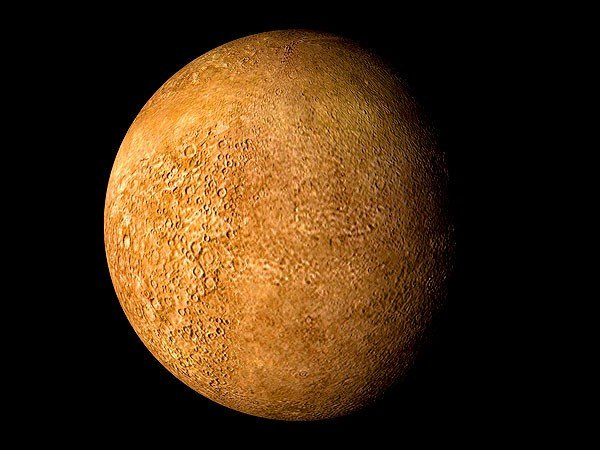

Мерку́рий — ближайшая к Солнцу планета Солнечной системы, наименьшая из планет земной группы. Названа в честь древнеримского бога торговли — быстрого Меркурия, поскольку она движется по небу быстрее других планет.Среднее расстояние Меркурия от Солнца чуть меньше 58 млн км (57,91 млн км)[17][18]. Планета обращается вокруг Солнца за 88 земных суток. Видимая звёздная величина Меркурия колеблется от −1,9[2] до 5,5 при нижнем и верхнем соединении, но его нелегко заметить из-за близости к Солнцу[19].
Радиус Меркурия составляет всего 2439,7 ± 1,0 км[2], что меньше радиуса спутника Юпитера Ганимеда и спутника Сатурна Титана (двух самых больших спутников планет в Солнечной системе). Но несмотря на меньший радиус, Меркурий превосходит Ганимед и Титан вместе взятые по массе. Масса планеты равна 3,3⋅1023 кг. Средняя плотность Меркурия довольно велика — 5,43 г/см3, что лишь незначительно меньше плотности Земли. Учитывая, что Земля намного больше по размерам, значение плотности Меркурия указывает на повышенное содержание в его недрах металлов. Ускорение свободного падения на Меркурии равно 3,70 м/с2[1]. Вторая космическая скорость — 4,25 км/с[1].
Меркурий относится к планетам земной группы. По своим физическим характеристикам Меркурий напоминает Луну. У него нет естественных спутников, но есть очень разрежённая атмосфера. Планета обладает крупным железным ядром[20], являющимся источником магнитного поля, напряжённость которого составляет 0,01 от земного магнитного поля[21]. Ядро Меркурия составляет 83 % от всего объёма планеты[22][23]. Температура на поверхности Меркурия колеблется от 80 до 700 К (от −190 до +430 °C). Солнечная сторона нагревается гораздо больше, чем полярные области и обратная сторона планеты.
ПРО ВЕНЕРУ